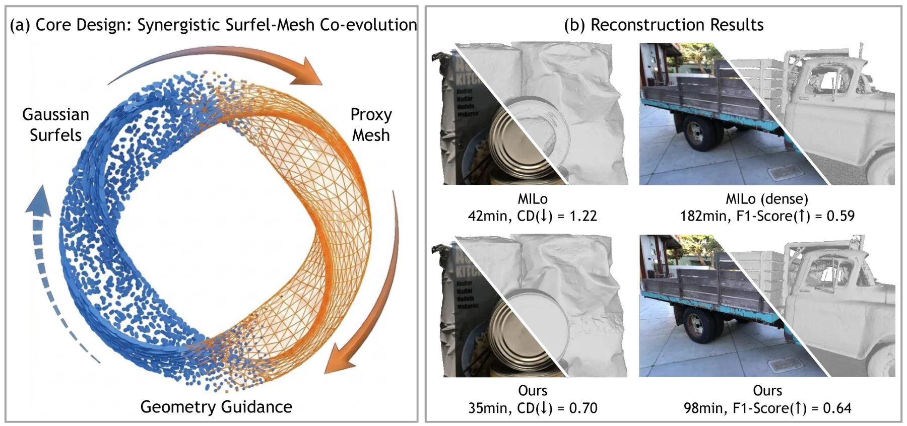

新论文 · 日期 2026-08-24 · score 9 · cs.CV, cs.GR
作者：Chuanjin Fan, Wenjie Chang, Bohao Liao, Yujia Chen, Wenfei Yang, Tianzhu Zhang
评分 9/10
3DGS表面重建网格可微几何
一句话工作总结：面向 3DGS 表面重建的网格—曲面元闭环优化，重点解决纹理缺失、遮挡区域的结构歧义和大场景初始化问题。对三维重建与可渲染网格输出最直接相关。
3D Gaussian Splatting 虽擅长新视角合成，但因离散且无结构，直接提取高保真表面容易产生伪影和漂浮点。TopoSurfel 通过不可训练的可微等值面提取动态生成连续代理网格，并以网格引导曲面元演化，结合法线对齐、几何感知密度控制和空间感知混合重初始化来抑制漂浮点、填补孔洞，提升复杂大场景重建稳定性。
3D Gaussian Splatting has achieved remarkable success in novel view synthesis. However, extracting high-fidelity surfaces directly from 3DGS remains challenging due to its discrete and unstructured nature. Exi…

新论文 · 日期 2026-08-24 · score 8 · eess.IV, cs.CV
作者：Shamus Li, Ruiming Cao, Laura Waller, Kristina Monakhova, Sara Fridovich-Keil
评分 8/10
多视点光场3DGS4DGS动态重建
一句话工作总结：从采集端说明多视点角度覆盖对 3D/4DGS 重建的价值，尤其适合关注低成本多相机、动态场景和少曝光重建的读者。
论文研究传感器受限的多视点采集：单个传感器在空间分辨率与角度分辨率之间权衡，或多个传感器同步观测同一曝光事件。作者构建包含三类消费级多视点相机的新数据集，并评估稀疏视图 3DGS/4DGS，结果显示即使基线较小，多相机角度采样也能显著改善单帧、少帧和动态场景重建。
Many consumer smartphones, stereo cameras, and light field cameras record multiple synchronized viewpoints in a single exposure event. However, novel view synthesis pipelines commonly use only a monocular stre…

新论文 · 日期 2026-08-24 · score 5 · cs.GR, cs.CV
作者：Qi Sun, Kiyohiro Nakayama, Jing Nathan Yan, Qixing Huang, Alexander Rush, Leonidas Guibas, Gordon Wetzstein, Jing Liao, Guandao Yang
评分 7/10
网格生成流匹配等变性3D生成
一句话工作总结：以显式对称性为核心的直接网格生成方法，适合跟踪三维表示生成、网格先验和高效推理方向，但它更偏生成而非传感器重建。
MeshFlow 将三角网格作为三角形集合直接生成，避免把网格序列化为很长的自回归序列。模型采用满足面置换不变性和面内顶点置换不变性的等变最优传输流匹配，并改造 Diffusion Transformer 以建模速度场；最优传输训练目标用于消除破坏对称性的监督信号。论文报告推理速度约提升 18 倍。
Meshes are among the most common 3D scene representations, but directly generating meshes is challenging because the representation contains important symmetries, including permutation invariance of faces and…

新论文 · 日期 2026-08-24 · score 4 · cs.CV
作者：Shengze Wang, Michael Stengel, Tianye Li, Seonwook Park, Amrita Mazumdar, Koki Nagano, Alex Trevithick, Shalini De Mello
评分 6/10
三维重建相机重定位新视角视频生成
一句话工作总结：将三维重建渲染作为视频生成的几何条件，并强调相机重定位误差；对关注重建—生成耦合、相机标定和视角变换的研究有跟踪价值。
针对单个外视角视频生成第一视角视频在大视角变化和不可观测区域下的困难，方法使用双分支视频扩散模型：几何锚定分支以三维重建渲染为条件，语义分支根据对象级上下文补足缺失区域；同时提出相机重定位算法处理相机与重建不对齐，并构建自动合成数据引擎。
Generating egocentric video from a single exocentric video is an emerging and important topic for AR/VR and physical AI. Compared with conventional novel view synthesis, exo-to-ego generation is a significantl…

新论文 · 日期 2026-08-24 · score 4 · cs.GR, cs.CV
作者：Ava Pun, Kangle Deng, Yiheng Zhu, Jun-Yan Zhu, Maneesh Agrawala, Tinghui Zhou
评分 5/10
3D生成网格部件级控制空间布局
一句话工作总结：面向可编辑组合式资产的部件级三维生成，适合作为网格分解、空间约束和语义三维表示的旁支跟踪。
MultiCube 接收全局文本、部件 schema 和各部件边界框布局，输出由独立网格部件组成的三维对象。方法先生成符合 schema 与布局的整体网格，再同步分解为多个部件，并通过 Part Layout Adapter 独立编码各部件条件，从而提供比全局文本或图像提示更精确的部件语义和空间控制。
Digital 3D objects used in games and animation are often required to be compositional; that is, decomposed into semantically meaningful parts. Recent 3D generation methods can produce high-quality compositiona…